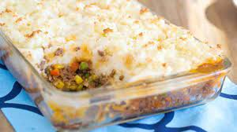

American Shepherds Pie

Description:
Classic beef american shepherds pie topped with baked mashed potatoes
Ingredients:
- 1 pound lean ground beef
- 1/2 cup chopped onion
- 1/2 cup chopped celery
- 1 can condensed vegetable soup
- 1/22 teaspoon dried thyme
- 3 cups mashed potatoes
- 1 cup shredded cheese
Steps:
- Preheat oven to 350 degrees F (175 degrees C) and
lightly grease a 2 quart baking dish.
- In a large skillet over medium-high heat, stir and
cook ground beef, onion and celery until juices run
clear.
Drain. Pour mixture into baking dish with
vegetable soup and thyme; stir well. Spread mashed
potatoes on top.
- Bake 20 minutes. Sprinkle shredded cheese on top and
bake 5 minutes more, or until cheese has melted.